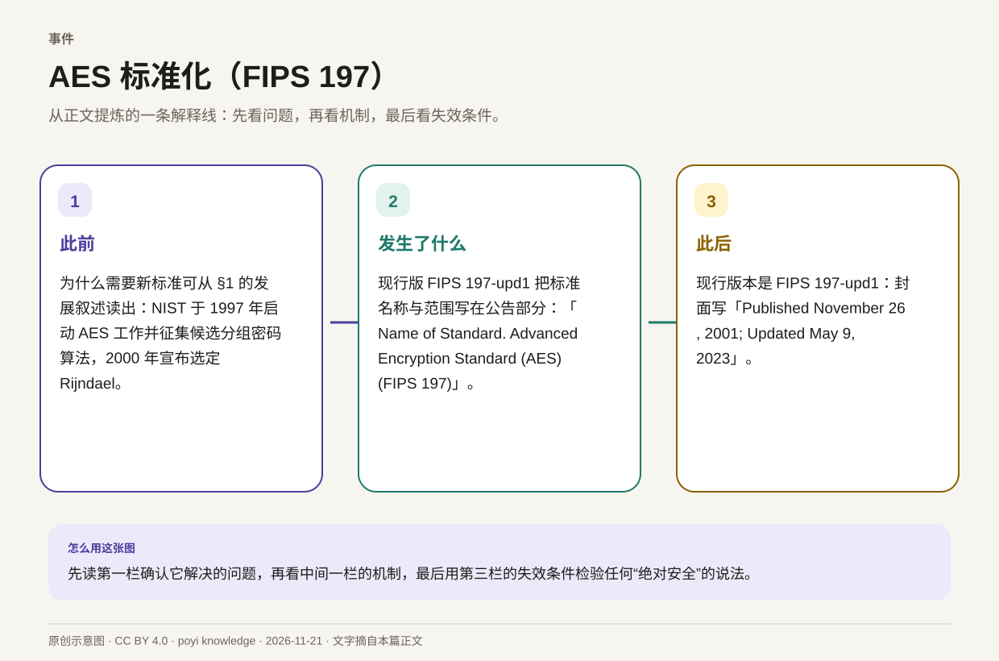
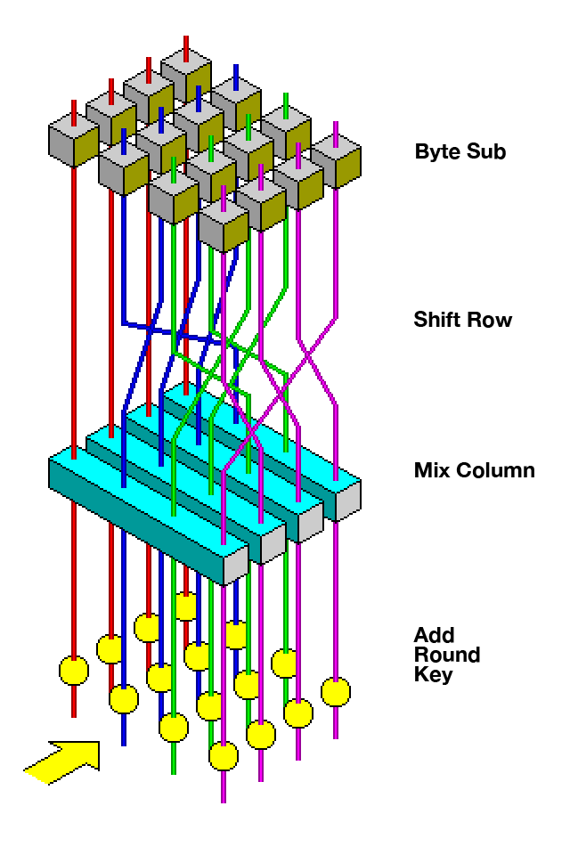

原理与机制
事件：AES 标准化（FIPS 197）（AES Standardized）。现行版 FIPS 197-upd1 把标准名称与范围写在公告部分：「Name of Standard.Advanced Encryption Standard (AES) (FIPS 197)」，并说明「The AES algorithm is capable of using cryptographic keys of 128, 192, and 256 bits to encrypt and decrypt data in blocks of 128 bits」。

为什么重要
为什么需要新标准可从 §1 的发展叙述读出：NIST 于 1997 年启动 AES 工作并征集候选分组密码算法，2000 年宣布选定 Rijndael；§2.1 词表把 Rijndael 定义为「The block cipher that NIST selected as the winner of the AES competition」，标准本身则指定该族的三个实例化（AES-128、AES-192、AES-256），并说明 Rijndael 还支持未被本标准采纳的其他分组与密钥长度；§1 还交代了这类算法的位置：「Block ciphers are the foundation for many cryptographic services, especially those that provide assurance of the confdentiality of data」（转文本把 confidentiality 的 fi 连字印作 confdentiality）。
应用与实例
现行版本是 FIPS 197-upd1：封面写「Published November 26, 2001; Updated May 9, 2023」；公告第 9 项说明「This Standard became effective on May 26, 2002」，第 12 项说明「NIST will formally reevaluate this Standard every fve years」（转文本因连字缺失，fi 中的 i 被吞掉，印作 fve）。
边界与攻击面
原 2001 版已被更新版取代：NIST 的撤回页记录「Federal Information Processing Standards (FIPS) Publication 197 Advanced Encryption Standard (AES) November 26, 2001 May 9, 2023 FIPS 197 is updated by NIST FIPS 197-upd1」，并说明附件仅为历史用途保留。更新说明同时强调这次更新「makes no technical changes to the algorithm specified in the original (2001) release of this standard」，只做编辑性改进——因此版本更替不改变算法强度。
历史与背景
时间线由文档自身给出：1997 年启动 AES 工作并征集算法，2000 年宣布选定 Rijndael，标准出版日 2001 年 11 月 26 日、生效日 2002 年 5 月 26 日，2023 年 5 月 9 日发布不带技术变更的更新版。

逐步示例与核验
事件时间线模型
背景 → 过程 → 结果 → 争议。背景写此前技术/制度；过程写可核参与者与时间；结果写后续标准、机器、课程或政策；争议写二手叙述与一手材料的差距。
参考出处
- Wikipedia search entry for AES 标准化（FIPS 197）. https://zh.wikipedia.org/w/index.php?search=AES%20%E6%A0%87%E5%87%86%E5%8C%96%EF%BC%88FIPS%20197%EF%BC%89
- A Brief History of Cryptology and Cryptographic Algorithms (Dooley, Springer 2013). https://link.springer.com/book/10.1007/978-3-319-01628-3